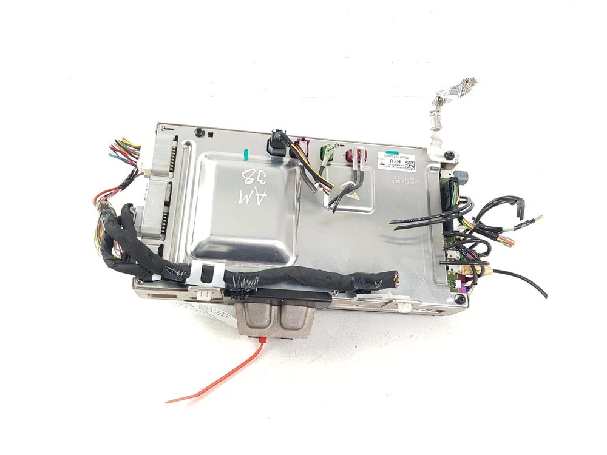
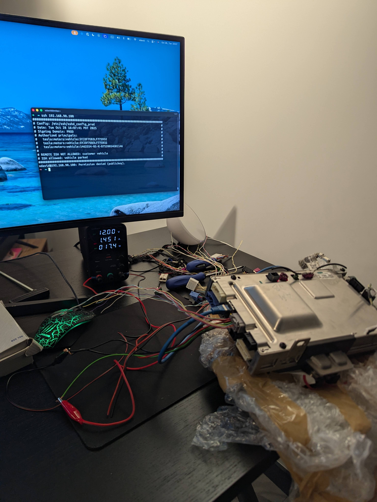
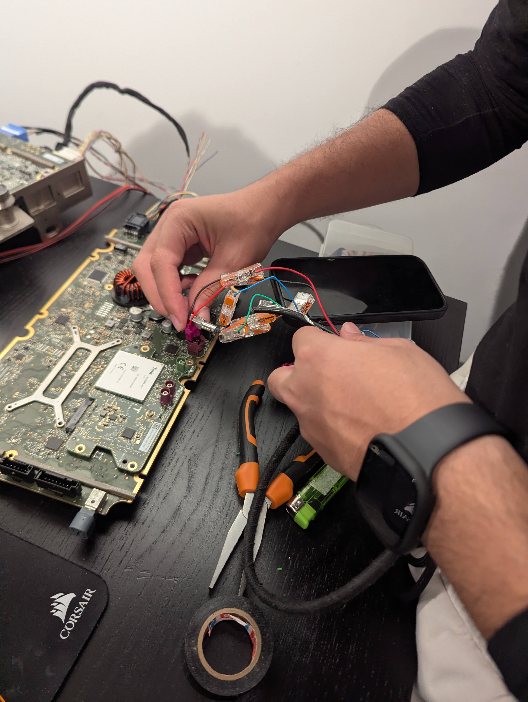
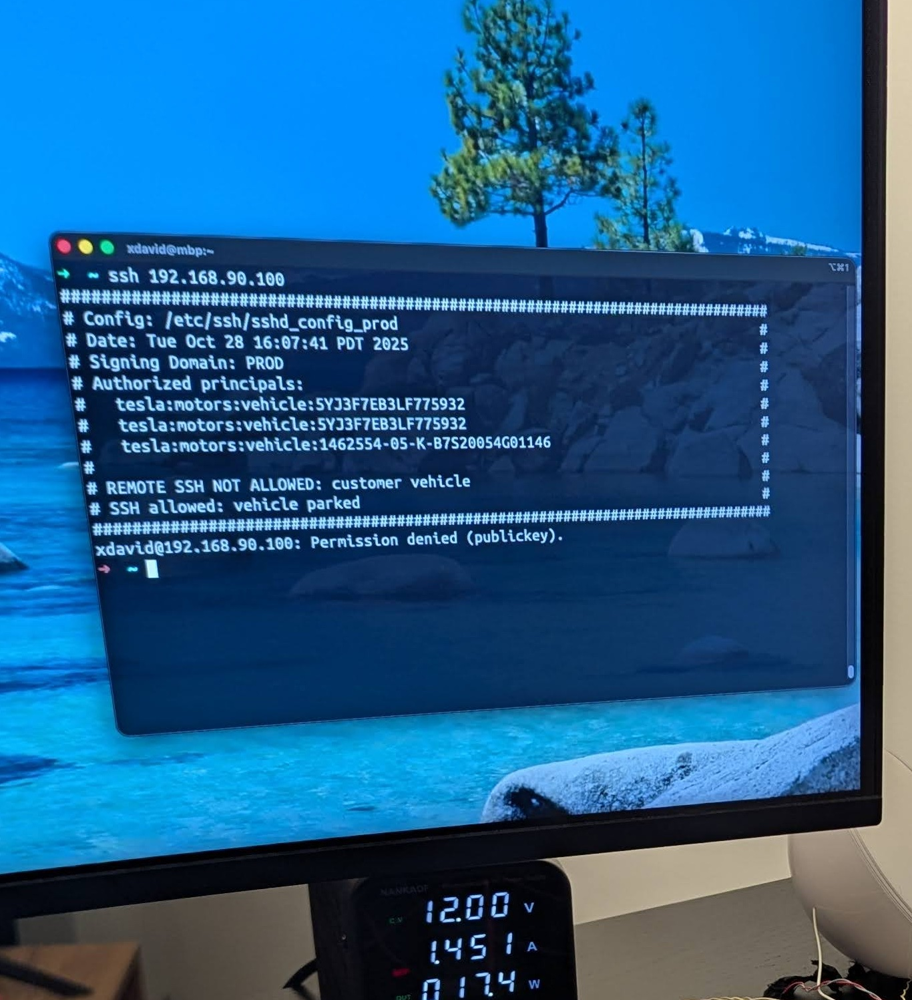
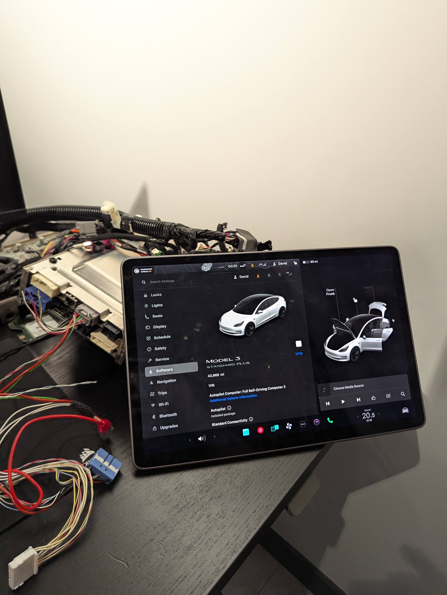

Security researcher David Hu brought the brain of a Tesla Model 3 back to life on his desk using salvage yard parts. The SSH server, ODIN API, and exposed internal network discovered in the process paint a stark picture of where Physical AI hardware security stands today.
Tearing Down a Car for a Bug Bounty
It started with a simple problem. Software security researcher David Hu (xdavidhu) wanted to participate in Tesla's bug bounty program. To hack a car, you need a car — ideally one you can put on a workbench.
Buying a new Tesla Model 3 wasn't an option. So he turned to eBay and salvage yards. If he could get Tesla's core computing units — the MCU (Media Control Unit) and AP Computer (Autopilot Computer) — running on his desk without an actual vehicle, he could analyze the software, hunt for vulnerabilities, and file bug bounty reports. Total cost: less than 1% of a new car.
"I wanted to find a way to research Tesla's software without actually owning a car. Salvage parts turned out to be the answer."
This wasn't just a cost-cutting move. It turned into one of the most direct public investigations of Tesla FSD computer internals, network architecture, and security design gaps ever published.
Tesla's Brain from eBay
The Tesla Model 3's computing architecture centers on two boards. The MCU handles infotainment and the user interface; the AP Computer runs the Autopilot algorithms and processes camera and sensor data. Inside the car, the two boards are combined into a single unit — and David bought them as a package.

MCU (Media Control Unit)
Runs the 17-inch touchscreen and all infotainment. Linux-based, with an Intel Atom processor in older models. The SSH server entry point.
AP Computer (Autopilot)
Tesla's dedicated FSD AI. Processes 8 cameras + radar + ultrasonic sensors and makes driving decisions.
Wiring Harness (Part No. 1067960-XX-E)
The adapter that connects the MCU to the vehicle's 12V power system. ~$80 on eBay. The critical link for bench power.
Touchscreen (~$175)
Required for a complete MCU setup. Provides the display output needed to verify the system is fully booted.
Key Insight
All parts were legally purchased through eBay and salvage dealers — no vehicle theft involved. This legal gray zone of "I own the hardware" turns out to be a critical gap in automotive security policy.
Waking Up a Tesla with 12 Volts
The Tesla MCU runs on standard 12V DC — the same voltage as any car battery. Once David identified the correct power pins on the wiring harness, the connection was straightforward. The challenge was knowing which pins to use without access to official Tesla documentation.

Power Connection Steps
Identify power pins
Located the 12V and GND pins on the wiring harness connector using community documentation and multimeter probing.
Connect bench power supply
Used a standard lab bench power supply set to 12V. Current draw at boot was within normal automotive range.
Partial boot — blocked by faulty chip
Initial power-on showed partial activity, but the system would not fully boot. Investigation revealed a damaged voltage regulator IC.
MAX16932: One Chip That Stopped Everything
When the board wouldn't fully boot despite proper 12V input, David began probing internal voltage rails. He discovered the culprit: a damaged MAX16932CATIS/V+T, a step-down (buck) voltage regulator controller from Maxim Integrated. Without it functioning correctly, the downstream voltage rails never came up — and the boot sequence stalled.

Chip Replacement Summary
Heat the existing chip with a hot-air rework station and remove without disturbing surrounding components.
Clean pads with flux and isopropyl alcohol. Inspect under microscope.
Solder new MAX16932CATIS/V+T. Re-apply power — internal voltage rails come up normally. Full boot begins.
Security Implication
A single $3 IC was the only barrier between "broken salvage board" and "fully operational Tesla computer." This illustrates how inexpensive hardware-level entry can be for a determined researcher — or attacker.
SSH Was Open
Once the MCU was running, David connected it via Ethernet. The board automatically configured a 192.168.90.X/24 subnet. A quick port scan revealed two open services:
22/tcp open ssh OpenSSH 7.x
8080/tcp open http ODIN API (Tesla internal diagnostic)
Port 22 — SSH — was listening. The Linux shell underneath Tesla's infotainment system was directly reachable. Port 8080 exposed the ODIN API, Tesla's internal vehicle diagnostics interface, over plain HTTP.

What This Really Means
The critical finding isn't just "SSH was open" — it's that interfaces designed only for in-vehicle use remain fully exposed when the hardware is physically separated from the car. A used-parts buyer, repair shop employee, or malicious actor could access prior-owner WiFi credentials, account tokens, and driving history stored on the board.
Full Boot Success
After replacing the MAX16932 chip, the system completed its full boot sequence. The Tesla UI appeared on the touchscreen — menus, settings, maps — all running on a board sitting on a researcher's desk, powered by a bench supply.

The full setup cost — boards, wiring harness, touchscreen, replacement chip — came to approximately $255. That's enough to run a Tesla's core AI computer indefinitely, outside any vehicle, with full network access to its internal services.
What Was Accessible After Boot
- ✓ SSH into Tesla's internal Linux environment
- ✓ ODIN API — vehicle diagnostics, sensor data, system state
- ✓ Prior owner data: saved WiFi SSIDs/passwords, linked account tokens, trip history
- ✓ Autopilot software stack — available for static and dynamic analysis
Pebblous Perspective
This project isn't just a story of "Tesla got hacked." It demonstrates how vulnerable the hardware layer of Physical AI systems — cars, robots, drones — can be, independently of any software-level protection. Four key implications stand out:
1. Hardware Security Modules Are Not Optional
Physical AI devices must implement HSM (Hardware Security Module) or TEE (Trusted Execution Environment) at the chip level. Software-only security is insufficient when the hardware itself can be accessed directly — and cheaply.
2. End-of-Life Data Wipe Is a Safety Requirement
Prior owner WiFi credentials and account tokens surviving on salvage hardware represent real risk. Automotive data lifecycle policy must treat hardware disposal the same way enterprise IT treats decommissioned servers.
3. Network Segmentation Assumptions Break at the Hardware Layer
Services like SSH and ODIN API are designed for the in-vehicle network. When hardware is physically separated, those segmentation assumptions collapse. Internal services must authenticate at the application layer, not rely on network topology.
4. Responsible Disclosure Programs Need Hardware-Tier Scope
This research happened precisely because David could legally acquire the hardware. Bug bounty programs for Physical AI companies should explicitly include hardware-level research to stay ahead of adversarial access.
Risk Analysis Table
Based on David Hu's findings and Pebblous's Physical AI security framework, here is a structured risk assessment of the exposed attack surface:
| Attack Vector | Exposure | Risk | Mitigation |
|---|---|---|---|
| SSH (Port 22) open on Ethernet | Internal Linux shell access | High | Disable or require certificate-based auth outside vehicle CAN |
| ODIN API (Port 8080) unauthenticated | Vehicle diagnostics, sensor data | High | Token-based authentication, TLS required |
| WiFi credentials persisted on MCU | Prior owner network access | High | Cryptographic wipe on ownership transfer / decommission |
| Account tokens in storage | Tesla account session hijack | Medium | Hardware-bound key storage (TPM/HSM) |
| No hardware attestation on boot | Modified firmware undetectable | Medium | Secure Boot with hardware root of trust |
| Physical access via salvage market | All above vectors accessible for ~$255 | Medium | Hardware lifecycle policy + cryptographic decommissioning |